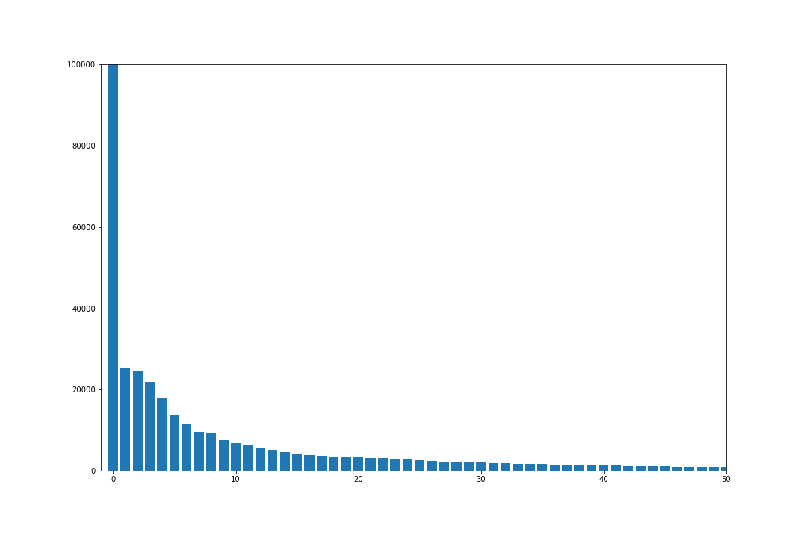

Project 3: Wrangle OpenStreetMap Data
Dieter Annys
Map Area
Medellín, Colombia
The area contains the city of Medellin, and neighbouring cities.
I chose this city because that's where I currently live.
Overview of the Dataset
The information we're interested in in the OSM datasets is generally structured as follows:
- Nodes: Defining points in space. Can be used on their own as point features, or together to define ways.
- Tags: Key value pairs defining a certain property of the node.
- Ways: Defining connections between points in space, e.g. roads, perimiters, areas, ...
- Node References
- Tags
Especially tags can be problematic, since they can contain any key value pair and can suffer from a lot of inconsistencies.
Colombian Data
Some notes on the location specific aspect of the data, and expected issues because of this
- Addresses in Colombia are commonly in the following format: Calle 80 # 15-21
- Calle, meaning street. So this is the type of street equivalent to Road, Avenue, ...
- 80: street name. Streets are usually numbered, not named (unless it's an important street)
- #: start of the house number
- 15: the name of the street crossing the address street closest to the address.
- 21: the house number on this block
- The local language is Spanish, with on average low proficiency in English
- In any place there might be confusion or mistakes related to keys being in English
- A lot of words contain accents, with which mistakes might be made
Data Wrangling Process
The code and workflow was done in a Jupyter Notebook (notebook and Python code extract included with this report) Of course there were experimentation and quick scripts that didn't all make it in the notebook.
Workflow
My workflow was as follow:
- Generate a dictionary containing all tag keys with the following structure as values:
tag_key: {
"count": amount of occurences,
"values": {
set of unique values
}
}
Note: While generating these tag key dicts I was wondering whether or not I had to generate two separate ones, one for nodes and ways. After generating two separate dicts, I noticed a lot of overlap, so I placed each dict's keys in a set, and looked at the difference between the 2 sets by doing set1 - set2. The outcome showed very few relevant looking keys that appeared in one dict versus the other, so I decided to use only one dict with tag keys.
- Use this dictionary in memory to audit values and define update functions, without having to reiterate over the XML file constantly
- Export the data to CSV files, passing the values through the update functions in the process
- Import the CSV's into an SQLite database
- Run investigative queries on the database
Audit: Problems Encountered & Solutions Defined
- Keynames
- Inconsistency. E.g. wifi and internet_access, or fixme and FIXME.
- Some keys are Spanish, e.g. Direccion (address) and Municipio (municipality).
- Street names
- Different ways of writing street type: abbreviations, case, typos, spacing
- Some street names contained the house number as well
- Some street names only contained the street type, others only the street number. Both of these make it harder to figure out what they are, because a street type obviously says very little, and an number alone, e.g. 50 could be Carrera 50, Calle 50, ... More than that, each city has its own street numbering, which means there could be multiple 50's, but one bein in Envigado being a Carrera, the other being in Bello being an Avenida.
- Some important streets are numbered, as well as have a name. These are applied either one or the other, or in some places both separated with a semicolon.
- The addr:full tag, which is inconsistent with the way of working with addr:street and addr:number
- The addr:city tag: Some values are actually comunas or neighbourhoors, such as Comuna 8 or El Poblado
- The addr:province and addr:state tag: both are the same and contain the country name Colombia, which should be addr:country, and if not, the province name Antioquia appears both in full and abbreviated as ANT.
Below I discuss these issues in more detail
Keynames
Regarding inconsistency in how they're applied, see Observations, Ideas, Improvements.
Some keys looked either Spanish or badly translated from Spanish. Since they had very low occurence I simply printed them out and had a look.
- Direccion: Spanish for address, 1 occurence, contained a street, so should be addr:street
- Municipio: Spanish for municipality, 1 occurence, contained a city, so should be addr:city
- direction: Contained directions, nothing wrong here.
Street Names
For this I designed 2 types of functions.
- audit functions: take a value check it against a regex pattern, and return True if there was a match, False if not. As a parameter it takes print_bad, which if set to true, it would print out the ones that didn't match. This made it easier to define what the next course of action was.
- update functions: take a value, correct it if needed and return the corrected value
I'd run the following code block to check how many values qualified. It puts the output of the audit function (boolean) in a list, and then compares the amount of Trues to the total anount.
audits = [ audit_street(addr_street)
for addr_street in sorted(tag_keys["addr:street"]["values"]) ]
print(len([t for t in audits if t]), "good values of", len(audits), "total")
audit_street (addr_street ) could be replaced by audit_street(update_street_type(addr_street)) for example to check how the update function performs.
The audit_street function would check against the following regex string, where expected is a list of expected values:
"^(" + "|".join(expected) + ")\s\d{1,3}(\s?\w{1,3}){0,2}$"
Update functions defined:
-
update_street_type, maps values on parts of the string that qualify for a certain regex string. e.g. various ways of writing Calle are replaced by the word Calle.
-
update_split_str_nr: if either # or No or No. is found in the string, the string is split into a street part and a number part. If not found, the function returns only the street and an empty number.
addr:full
Because some of the addr:street values look exactly like addr:full, we can simply apply the same process, being, first splitting them, and then updating the street part.
addr:province, addr:state
This change is simple. First, we need to decide on one and only one keyname, so let's choose addr:state. Second, the whole dataset is in one state, so we need to set the value to Antioquia.
addr:city
Since city is only correct if it contains one of a manageable list of nearby cities, I decided to create an update_city function, and while writing it check the values by putting the output in a set.
One of the difficult things to automate was that several of the values contained the province name as well (Antioquia), but one of the towns is called Santa Fé de Antioquia, so simply removing the word was not an option.
The way I tackled it was:
- Create a separate function to remove accents from values. I decided I'd apply this to every single tag value in the dataset, so not to run into trouble when exploring the data (e.g. data being split into values for Medellin and Medellín with í)
- Remove commas and change the casing to first letter uppercase and rest lowercase.
- Pass through regular expressions for each city and map the correct values. If the value was the name of a neighborhood, it would be replaced with Medellin.
def update_remove_accents(value):
value = unicodedata.normalize('NFKD', value).encode('ASCII', 'ignore')
value = value.decode("utf-8")
return value
def update_city(city):
city = str(city).replace(",", "").strip()
city = city.split()
for i, word in enumerate(city):
city[i] = word[0].upper() + word[1:].lower()
city = " ".join(city)
city_mapping = {
"Medellín": "^medell?i|^el\spoblado|^comuna",
"Rio Negro": "^rio\s?negro",
"Sabaneta": "^sabaneta",
"La Ceja del Tambo": "^la\sceja",
"El Carmen de Viboral": "^el\scarmen\sde\svibora"
}
for correct, regex in city_mapping.items():
pattern = re.compile(regex, re.I)
m = re.search(pattern, city)
if m:
city = correct
break
return city
Database Queries & Statistics
File Sizes & General Statistics
Using a python script (found at the end of the code notebook), I checked sizes for the following files:
medellin_colombia.osm .... 76.35 MB
sample.osm ............... 5.19 MB
medellin_osm.db .......... 39.35 MB
node.csv ................. 30.03 MB
node_tag.csv ............. 0.90 MB
way.csv .................. 2.37 MB
way_tag.csv .............. 2.18 MB
way_node.csv ............. 10.40 MB
Running SQL statements to count the values in each table, resulted in the following numbers:
SELECT count(*) FROM nodes;
382257
SELECT count(*) FROM nodes_tags;
28313
SELECT count(*) FROM ways;
41450
SELECT count(*) FROM ways_tags;
80875
SELECT count(*) FROM ways_nodes;
449013
Contributors
I decide to make a combination view of nodes and ways so that it becomes easier to write statements regarding user count.
CREATE VIEW combo AS SELECT user FROM nodes UNION ALL SELECT user FROM ways;
Number of distinct users
SELECT COUNT(DISTINCT(combo.user)) as num FROM combo;
num
----------
882
Top 10 users by amount of contributions
SELECT combo.user, count(*) AS num FROM combo GROUP BY combo.user ORDER BY num DESC LIMIT 10;
user num
---------- ----------
carciofo 139630
Argos 25181
harrierco 24386
JLOSM 21819
Kleper 18023
JosClag 13783
cris_1994 11352
humano 9540
Antares_al 9290
mono11 7612
I placed these numbers on a graph (to be found in the code notebook), which shows user carciofo spiking at the beginning, with the rest of contribution counts tapering off.

Counting the total amount of contrinutions:
SELECT COUNT(*) AS num FROM combo;
num
----------
423707
Meaning user carciofo's contributions account for one third of the dataset.
I want to see if Pareto's principle holds up (80% of contributions are made by 20% of people), by checking the amount of contributions made by 20% of the users (~176)
SELECT SUM(num) FROM (SELECT combo.user, COUNT(*) AS num FROM combo GROUP BY combo.user ORDER BY num DESC LIMIT 176) AS twenty;
SUM(num)
----------
416035
Dividing this number by total amount of contributions, we get that 98% of contributions are made by 20% of users.
Exploring Tags
The sports with most access for practice:
SELECT value, count(*) as num FROM nodes_tags WHERE key='sport' GROUP BY value ORDER BY num DESC LIMIT 5;
value num
---------- ----------
swimming 17
soccer 11
gymnastics 2
billiards 1
cycling 1
Most represented religions:
SELECT value, count(*) as num FROM nodes_tags WHERE key='religion' GROUP BY value ORDER BY num DESC LIMIT 5;
value num
---------- ----------
christian 99
There's only place for Christian worship in Medellin, which is agrees with intuition.
Top 5 amenities:
SELECT value, count(*) as num FROM nodes_tags WHERE key='amenity' GROUP BY value ORDER BY num DESC LIMIT 5;
value num
---------- ----------
restaurant 172
place_of_w 122
fuel 117
school 92
fast_food 76
Observations, Ideas & Improvements
Having observed the dataset, I have thought of some possible improvements and ideas, both in generation of the dataset, as in the analysis.
A few observations about the dataset:
- There are a lot of tags that might be more useful if they were more consistently applied, such as social media tags (facebook, twitter), several fuel types seem to be indicated in only one place in the city (which I find unlikely but could be close to the truth)
- There are several keys that mean the same thing, but are named differently. More consistent choices could be made with these as well.
- When reviewing my submission and the output values, I found a million places more where I could clean. For example the tag types 'tiger' or 'is_in' could all be checked if they can't be replaced by 'addr', etc. Lesson learned is how important validation is when inputting data in the first place. The big one in this case is street names missing the street type, which would require cross-referencing lat-lon positions with streets in a source like Google Maps.
These can be remedied mainly in two points of the dataset's lifecycle: during data entry, and during analysis
- Issue of tags not being applied often enough, many tags indicating the same thing but having different key names, or values not being valid: measures could be taken so that the data entry process is more rigid, values are validated more strictly, and often-used tags are mandatory or at least suggested.
- Benefits
- Cleaner data from the get go
- Incorrect values would not lie lurking in the dataset until an analyst corrects them. Especially in this dataset, it is obvious a lot of incomplete or oddly formatted data slips through.
- If e.g. adding whether or not a restaurant had free wifi was suggested by the system, it would take the pressure off the author for coming up with all possible properties to add. This in turn would make people trust the dataset more as a source of, in this case, where to find internet access.
- Anticipated issues
- For a framework that is supposed to be able to accept data from all around the world with all its nuances, it can never be made too rigid. Else the risk is not accepting data that is actually valid but not anticipated by the developers.
- Sort of in line with the previous point, it would make the system less flexible, and it would become less likely that certain tags start occuring often organically.
- It would need a lot more centralized oversight to ensure all rules in place are strict enough, but not too strict. The idea is still that this is a community project.
- Benefits
- During analysis, tag types and keys could be checked more thoroughly for values that fall in the same category (such as tiger, addr and is_in), and measures could be taken to choose one single keyname for the same type of values.
- Benefits
- This makes the numbers a lot more meaningful, if we query for specific keys. If 80% of your streets are of type 'addr' and the rest of type 'is_in', we risk underestimating the amount of streets in reality
- It makes searching in general easier, both internally and for the user, who gets 100% of the answers when checking a tag key.
- Anticipated issues
- The analyst may overlook nuances in the meaning of the tag keys, because values appear to be of the same type, causing the data to lose depth in the cleaning process.
- Decisions need to be made what exactly we are interested in in the dataset. Without clear questions or specific interests, the data could be cross-checked and corrected ad infinitum.
- Benefits
- During analysis, code could be implemented that compares tags under the same node or way, which is something I currently haven't done. For example, I split addr:full into addr:street and addr:housnumber, but it could well be that an addr:housenumber is already defined which is possibly inconsistent with the one that was in the full address value. A second part would be to identify holes in the data, e.g. nodes that have a street, but no number.
- Benefits
- At the very least identify where the holes and inconsistencies lie, making room for making corrections afterwards.
- Anticipated issues
- Knowing where the holes are, does not necessarily help us answer our questions without filling the gaps.
- The obvious issue is where to find the gold standard, short of walking to the location containing inconsistencies and checking yourself, correcting the data manually.
- Decision needs to be made what the benefit is of identifying the holes in the data, since a lot of these would need to be filled on a one-by-one basis. This might not be worth the investment.
- Benefits
References
- Regex tutorials
- Book: Mastering Regular Expressions, by Jeffrey Friedl
- SQL UNION statement
- How to write query output to file
- Creating a new view in SQL
- How to strip addents from strings
- Many google searches that went undocumented due to excitement...